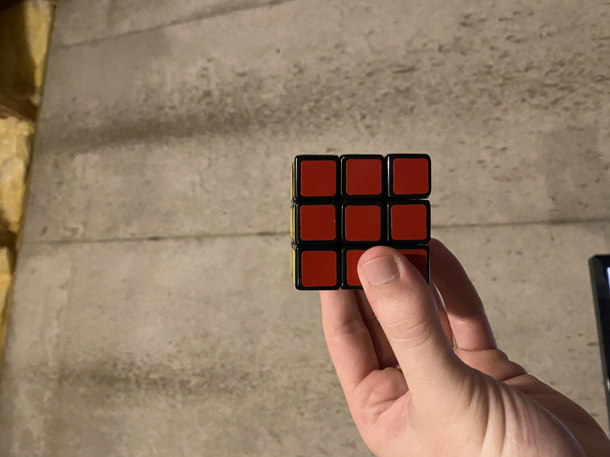
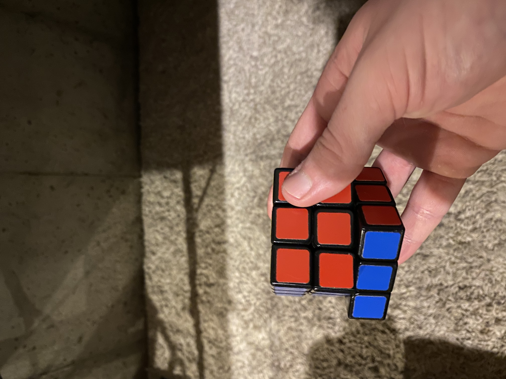
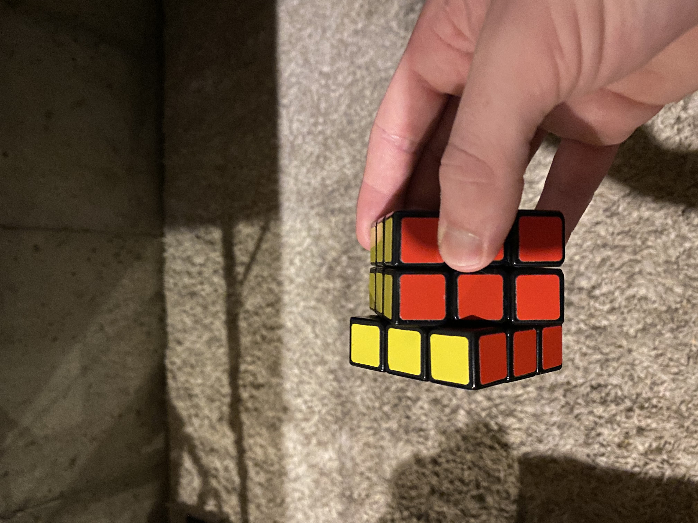
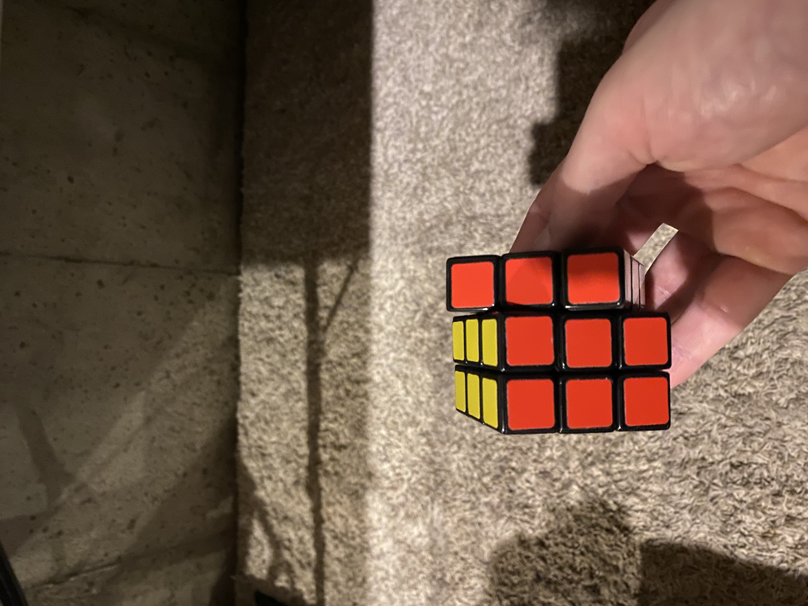
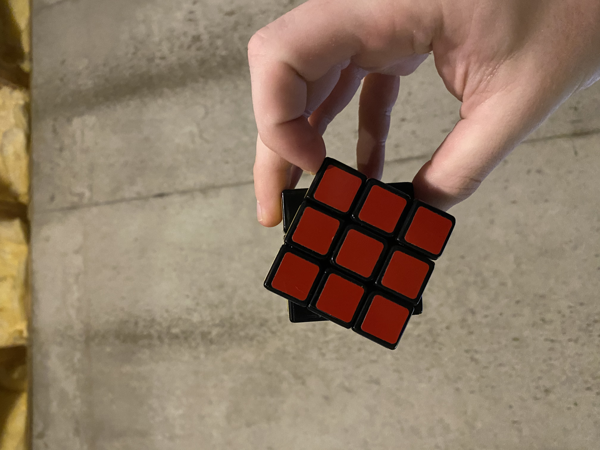
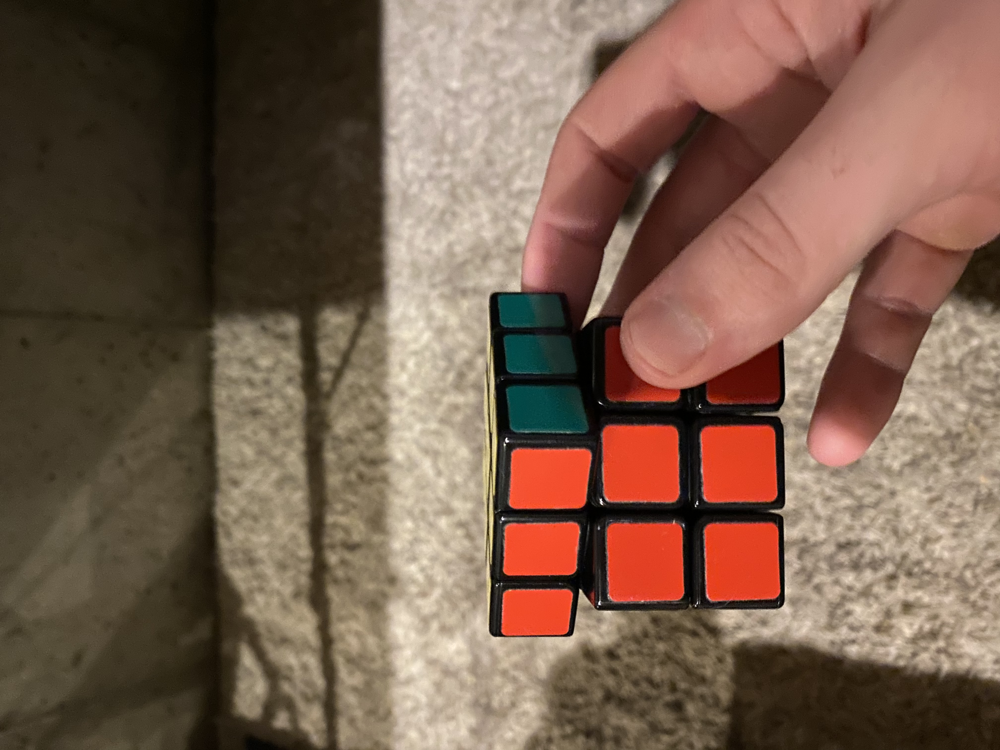

-The Basics-
For starters, we need to know how to handle a Rubik's cube, and how to move sections by reading Rubik's movement notation. Each face/section of the cube has a corrisponding marker for rotating clockwise and counter clockwise. In total there are 12 different markers for a 3x3x3, with 6 of them being clockwise rotations, and 6 being counterclockwise rotations.
-Notation-
Assume you hold the cube level with one side facing you:
clockwise notation is just the letter, and counterclockwise is the letter with a ' (apostrophe)this is called prime.
1. "D" stands for downward facing side (counterclockwise would be D' "D prime")
3. "L" stands for left facing side (counterclockwise would be L' "L prime")
5. "R" stands for right facing side (counterclockwise would be R' "R prime")
2. "F" stands for front facing side (counterclockwise would be F' "F prime")
4. "B" stands for back facing side (counterclockwise would be B' "B prime")
.png)
6. "U" stands for top facing side (counterclockwise would be U' "U prime")
-How To Solve It-
We will be learning how to solve a 3x3x3 with the F2L method (first two layers). Let's start by choosing a side to solve. You can start solving from any side of the cube, and the steps would be the same. Although for teaching purposes let's start by solving the white side first. Usually the white side is seen as bottom or D side of the cube, and yellow is seen as the top or U side.
-Step One-
To start we need to make a cross. Unfortunately there are no algorythms to help you here, but I believe in you.
-Step Two-
Now we need to fill in the corners of the first layer. First let's turn the cube so the cross you just made is facing down. Then ideally there will be a corner peice in the top layer (U layer) that can be placed. A corner peice can be placed if the color that will be facing down is facing any direction but up. Ex.
If there are no corner pieces ready to be placed. While still holding the cube with the cross facing down, find a corner piece to take out of the bootom layer and do (R, U, R'). this will get the corner peice on the top layer while keeping your cross.
Now to actually place the corner piece. Do (U) until the side of corner piece that won't be facing down matches one of the center colors. Then do either (R, U, R') if the corner peice is on the right side OR (L', U', L) if the corner piece is on the left side. Ex.
-Step Three-
Now things get interesting, in this step we will finish the first two layers by placing the edge pieces. First thing to do is find an edge piece on the top layer, and line up the color not facing the top with it's matching core color. Ex.
Once you have lined up the edge with the matching center, look at the color facing the top. This will tell you which direction you need to go (left or right). If the top color matches the right side center piece then do (U, R, U', R', U', F', U, F), and if it matches the left side center piece do (U', L', U, L, U, F, U', F').